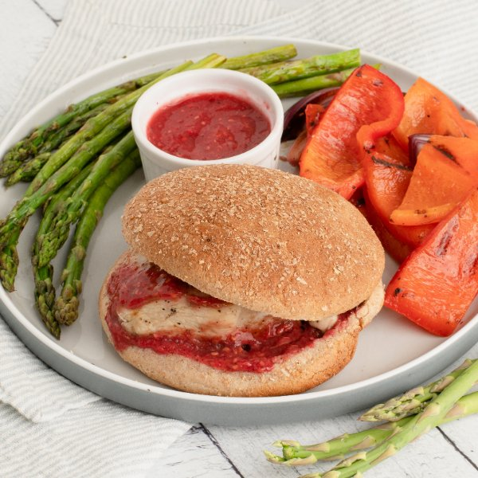

Grilled Chicken Burger with Raspberry BBQ Sauce, Asparagus & Peppers

Total Time
35 min
Nutrition (Per Serving)
563.1 kcalCalories
49.1 gProtein
52.6 gCarbs
18.4 gFat
Full nutrition table
| Calories | 563.1 kcal |
| Total fat | 18.4 g |
| Saturated fat | 3 g |
| Trans fat | 0.4 g |
| Cholesterol | 124.2 mg |
| Sodium | 441.8 mg |
| Carbohydrates | 52.6 g |
| Fiber | 13.7 g |
| Sugars | 25 g |
| Protein | 49.1 g |
| Potassium | 1337.4 mg |
| Calcium | 142.5 mg |
| Iron | 5.7 mg |
| Vitamin A | 1139.8 IU |
| Vitamin C | 125.7 mg |
| Vitamin D | 1.7 IU |
Cookware
Ingredients
- 2 small bunchesasparagus
- 1 ½ lbchicken breasts, boneless skinless
- 2 clovesgarlic
- 1orange
- 2 (6 oz) pkgsraspberries
- 2red bell peppers
- 1 mediumred onion
- 4whole grain buns or rolls
- black pepper
- brown sugar
- chili powder
- cumin, ground
- extra virgin olive oil
- ketchup
- salt
- Worcestershire sauce
Steps
- Wash and dry the fresh produce.1 orange
2 (6 oz) pkgs raspberries
2 red bell peppers
2 small bunches asparagus - Juice orange into a blender.
- Peel garlic; add to the blender with the orange juice along with raspberries, ketchup, sugar, Worcestershire, and spices. Blend on high until BBQ sauce is very smooth, about 1 minute; set aside.2 cloves garlic
¼ cup ketchup
4 tsp brown sugar
1 tsp Worcestershire sauce
½ tsp cumin, ground
¼ tsp chili powder
¼ tsp salt
¼ tsp black pepper - Preheat a grill pan, outdoor grill, or regular skillet over medium-high heat.
- While the grill pan heats up, pat the chicken dry with paper towels and place on a cutting board. Holding a knife parallel to the cutting board, cut the chicken in half horizontally to form thin cutlets. Season with salt and pepper on both sides.1 ½ lb chicken breasts, boneless skinless
1 tsp salt
½ tsp black pepper - Once the grill pan is hot, coat with oil; add chicken and grill until charred and cooked through, 3-4 minutes per side. Remove to a plate and loosely cover with aluminum foil.4 tsp extra virgin olive oil
- Meanwhile, using a clean cutting board, trim, halve, seed, and slice bell peppers crosswise into 1-inch wide strips; place in a medium bowl.
- Snap (or cut) off woody ends of the asparagus; add to the bowl with the bell pepper.
- Peel, halve, and slice onion lengthwise into ½-inch thick wedges; add to the bowl. Drizzle veggies with oil, season with salt and pepper, then gently toss to coat.1 medium red onion
2 tbsp extra virgin olive oil
½ tsp salt
¼ tsp black pepper - Once the chicken is done, working in batches if necessary, add veggies to the pan; grill, flipping once, until tender, 2-3 minutes per side. Return to the bowl.
- Meanwhile, toast buns if desired.4 whole grain buns or rolls
- To assemble the burgers, spread 1 tablespoon of BBQ sauce over the bottom half of each bun; top with chicken and another 1 tablespoon of the sauce. Close with the top half of each bun. (Reserve remaining sauce for serving.)
- Divide burgers and grilled veggies between plates; serve with remaining sauce on the side for dipping. Enjoy!